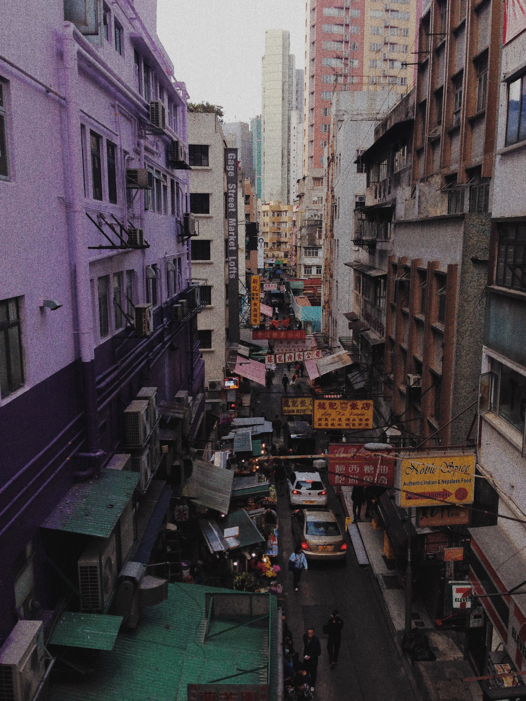
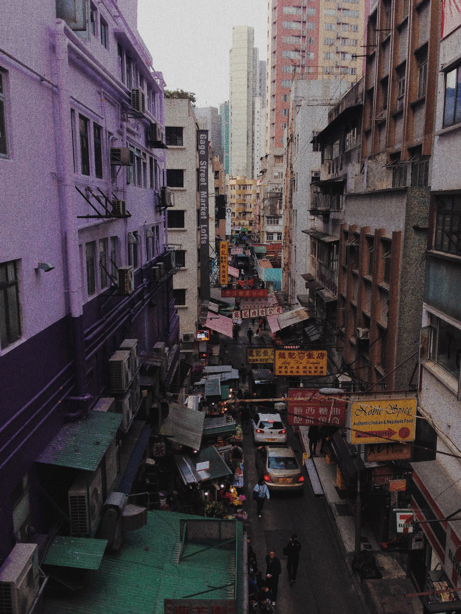
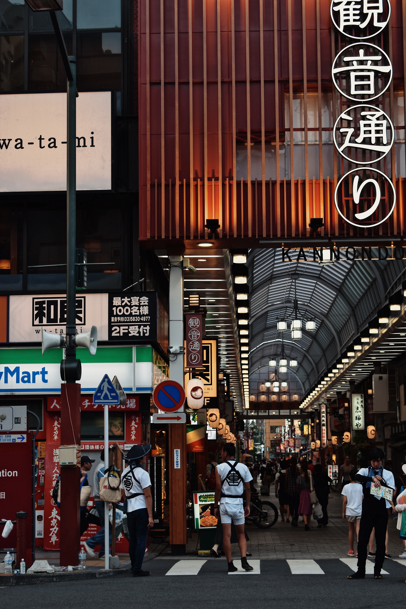

5 of my favorite places within a neighborhood
SHEUNG WAN, HONG KONG

Explore More
SHEUNG WAN, HONG KONG
 Explore MoreSheung Wan in the west side of the main business district, Central in Hong Kong. Since Hong Kong is known as an autonomous territory and a former British colony. The Edwardian-style building is one of the features of the district. Sheung Wan is also known for the lively area that it is down to earth vibe. The surrounding of the neighborhood has many creative hubs such as design studios, art gallery, murals or distinctive cafe and bar. As a whole, the place is like an art district of Hong Kong.
CAUSEWAY BAY, HONG KONG
 Explore More
Explore More
Causeway Bay, a main busy district with energetic retail stores all around. The neighborhood is located in Hong Kong, an international city that is located in southeastern China. One of the reasons why I like Causeway Bay because is I grew up in this area surrounding numerous dining options, from upscale restaurants to street-food stalls.
HARAJUKU, TOKYO
 Explore More
Explore More
Harajuku is a district famed for the vibrant food scene and the trendy fashion culture in the city of Tokyo, the capital of Japan. The whole city is mixed between the ultramodern and the traditional. Walking through the old narrow street is the best experience I ever have for exploring their culture and community.
GION, KYOTO
 Explore MoreThe Gion district of the city of Kyoto in Japan is fulfilled with the Japanese culture in the atmosphere. It is famous for Buddhist temples, gardens, Shinto shrines, and traditional wooden houses. Travelers the tradition such as kaiseki dining, geisha, or wearing kimono while exploring around the area.
San Francisco Chinatown is one of the oldest and most established Chinatowns in the U.S. There is a lively food scene, ranging from Cantonese dim sum on the streets and alley. As a Chinese walking around the neighborhood, I feel like the atmosphere in Chinatown of San Francisco is more traditional than being in China. Also, I could always found some ironic scenes that I could photograph or for inspiration.